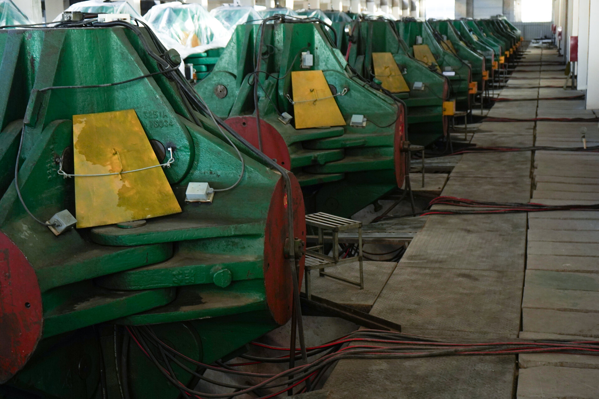

Memorial Diamond Returns and Remakes: Partner Policies That Work
A structured B2B policy framework for handling memorial diamond returns and remakes. Defect classification, cost allocation, warranty architecture, and client communication protocols for OEM partners and memorial product resellers.

Memorial diamonds are manufactured through high-pressure, high-temperature synthesis — a process that, despite rigorous quality control, can produce results that deviate from contracted specifications. For B2B partners reselling memorial diamonds to end clients, the return and remake policy is not merely a customer service formality. It is a commercial instrument that affects profit margins, client retention, supplier relationships, and legal liability. A well-structured policy prevents disputes, protects the partner's reputation, and establishes clear expectations with both clients and the manufacturing laboratory. This guide presents the policy framework that BioGem Lab partners use to manage returns and remakes effectively.
TL;DR — Quick Summary
Effective memorial diamond return policies require four structural elements: (1) objective defect criteria that classify defects by technical severity and manufacturing responsibility, (2) clear cost allocation that distinguishes manufacturer defects from client-requested changes, (3) realistic remake timelines that reflect the full synthesis cycle (8-14 weeks), and (4) documented verification processes that require independent gemological assessment before remake authorization. Partners who implement these policies report 60% fewer post-sale disputes and significantly higher client retention.
The Defect Classification Framework
Not all deviations from client expectations constitute defects. A memorial diamond may differ from a client's mental image without failing to meet the contracted technical specifications. Distinguishing between subjective dissatisfaction and objective defects is the first and most important step in any return policy. Partners need a defect classification framework that is transparent, technically grounded, and defensible.
Class I: Critical Manufacturing Defects
Class I defects are deviations from the contracted specifications that render the diamond commercially unacceptable. These defects are unequivocally the manufacturer's responsibility and always qualify for a remake at no additional cost. The criteria include:
- Structural fracture: Any crack, cleavage, or internal fracture visible under 10x magnification that compromises the diamond's structural integrity or expected durability.
- Color grade deviation: A color grade that differs by more than one full grade from the contracted specification (e.g., delivering J color when I color was ordered).
- Carat weight below threshold: A finished weight below the guaranteed minimum threshold specified in the contract, accounting for the standard ±0.03 carat manufacturing tolerance.
- Cut grade below standard: A cut grade below the contracted standard (e.g., Good instead of Very Good) as verified by independent gemological assessment.
Class I defects require photographic documentation, independent gemological verification (IGI or GIA), and written confirmation from the partner that the diamond does not meet the contracted specification. The manufacturer is responsible for the full remake cost, including carbon extraction (if the original sample is available), synthesis, cutting, polishing, and certification.
Class II: Minor Manufacturing Variations
Class II deviations are manufacturing variations that fall within the normal range of laboratory-grown diamond production but may not match the client's expectations. These do not automatically qualify for a remake but may be addressed through partial credit or discretionary remake at shared cost. The criteria include:
- Surface inclusions: Small surface inclusions that do not affect structural integrity or brilliance, visible only under magnification.
- Color variation within grade: Natural color variation at the upper or lower boundary of the contracted grade range (e.g., a high-J diamond that appears closer to I).
- Minor polishing marks: Small polishing lines that do not impact light performance or durability.
- Symmetry variation: Slight symmetry deviations that do not change the overall cut grade.
Class II deviations are not manufacturing errors. They are the natural consequence of growing crystals under extreme conditions. Partners should communicate to clients that laboratory-grown diamonds, like mined diamonds, exhibit natural variations. The Memorial Diamond Size Guide and the Pet Memorial Diamond Buying Guide provide the technical background needed to explain these variations to clients.
Class III: Client-Initiated Changes
Class III scenarios are not defects at all. They occur when the client requests a change to the diamond's specifications after synthesis has begun or after delivery. Common examples include: requesting a different color grade after seeing the result, changing the cut style after the diamond has been cut, or requesting a larger carat weight after the synthesis is complete. These changes are not covered by any warranty or return policy and are borne entirely by the client at full cost. Partners should document these terms clearly in their purchase agreement to prevent disputes.
Defect Classification Summary
| Class | Cause | Remake Cost | Verification |
|---|---|---|---|
| I — Critical | Manufacturing error | Manufacturer | IGI/GIA report |
| II — Minor | Natural variation | Shared / Discretionary | Photographic + lab review |
| III — Change | Client request | Client (full) | Contract terms |
The Remake Process
When a Class I defect is verified, the remake process follows a structured sequence that ensures quality and traceability. Partners should understand each stage so they can communicate accurate timelines to clients and manage expectations appropriately.
Stage 1: Verification and Authorization
The partner submits a remake request with: (1) the original order number, (2) photographic documentation of the defect, (3) the independent gemological report verifying the deviation, and (4) a written description of the defect. The manufacturer reviews the submission within 5 business days and issues a remake authorization or requests additional documentation. No remake work begins without formal authorization.
Stage 2: Carbon Source Confirmation
If the original biological sample was retained by the manufacturer, carbon for the remake is extracted from the retained material. If the sample was not retained or insufficient material remains, the partner must obtain a new sample from the client. This is a critical point in the remake process: partners should confirm sample retention policies with their manufacturer before accepting orders. At BioGem Lab, we retain sufficient purified carbon from each batch to enable one remake without requiring a new sample, subject to sample type and carbon yield.
Stage 3: Synthesis and Manufacturing
The remake undergoes the full synthesis cycle: HPHT crystal growth (4-8 weeks depending on target carat weight and color), cooling and annealing (1-2 weeks), cutting and polishing (1-2 weeks), and independent gemological certification (1-2 weeks). Total timeline ranges from 8 to 14 weeks. Partners should not promise clients faster timelines, as rushing the synthesis process compromises crystal quality and increases the risk of another defect.

Stage 4: Quality Control and Delivery
The remade diamond undergoes the same quality control protocol as a first-run diamond: internal inspection, independent gemological grading, and batch verification against the original order specifications. The partner receives the new certification report, chain-of-custody documentation, and a written quality assurance statement. The defective diamond is returned to the manufacturer for analysis and disposal.
Warranty Architecture for Partners
Partners should offer a limited warranty to end clients that is clear, defensible, and aligned with the manufacturing capabilities. Overly generous warranties create financial liability; overly restrictive warranties damage client trust. The optimal warranty structure balances these considerations.
Recommended Warranty Terms
A 12-month limited warranty covering manufacturing defects is the industry standard for memorial diamonds. The warranty should explicitly specify:
- Covered items: Structural defects, color grade deviations beyond one grade, carat weight below the contracted minimum, and cut grade below the contracted standard.
- Remedy: Remake at no additional cost, or partial refund at the partner's discretion if the client prefers not to wait for a remake.
- Exclusions: Damage from impact, improper jewelry setting, chemical exposure, unauthorized modification, loss, or theft. Normal wear and tear is not covered.
- Claims process: Written notification within 30 days of defect discovery, photographic documentation, and independent gemological verification at the partner's designated laboratory.
Partners should not offer lifetime warranties on memorial diamonds. Crystal integrity depends on conditions of use that the manufacturer cannot control. A lifetime warranty exposes the partner to unlimited liability for events (impact, thermal shock, improper setting) that are outside the manufacturing process. The 12-month limited warranty provides sufficient protection for manufacturing defects while acknowledging the practical limits of product guarantees.
Client Communication Protocols
How partners communicate about returns and remakes directly affects client satisfaction, even when the technical outcome is the same. Clear, structured communication reduces anxiety, manages expectations, and preserves the relationship.
The Initial Defect Report
When a client reports a concern, the partner should respond within 24 hours with a structured acknowledgment that includes: (1) confirmation that the concern has been received, (2) the specific documentation required to evaluate the concern, (3) the expected timeline for evaluation, and (4) a clear statement of the next steps. This response should be factual, not apologetic. Phrases like "we're investigating" or "we'll get back to you" are preferable to premature admissions of fault or dismissive reassurances.
The Evaluation Communication
Once the evaluation is complete, the partner communicates the classification result (Class I, II, or III) with supporting documentation. For Class I defects, the communication includes the remake authorization, timeline, and process overview. For Class II deviations, the communication explains why the diamond meets the contracted specification and offers options (partial credit, upgrade discount, or no action). For Class III changes, the communication restates the contract terms and provides a quote for the requested change.
The goal of communication is not to avoid remakes — it is to ensure that every decision is grounded in documented technical criteria. Clients respect clarity, even when the outcome is not what they hoped for. The Memorial Diamond Sales Transparency article provides additional guidance on building trust through documented communication.
Request OEM Partner Terms
Download our standard B2B supply agreement, warranty template, and defect classification guide for memorial diamond partners.
Contact LaboratoryFrequently Asked Questions
What defects qualify for a memorial diamond remake?
Defects that qualify for remake include: structural fractures visible under 10x magnification, color grade deviation of more than one full grade from the ordered specification, carat weight below the guaranteed minimum threshold, and cut grade below the contracted standard. Surface inclusions that do not affect structural integrity, natural color variations within the specified grade range, and minor polishing marks that do not impact brilliance are not considered defects. Each defect category requires documented photographic evidence and independent gemological verification.
How long does a memorial diamond remake take?
A memorial diamond remake requires the full synthesis cycle: carbon extraction verification (if original sample is available), HPHT crystal growth (4-8 weeks), cooling and annealing (1-2 weeks), cutting and polishing (1-2 weeks), and independent certification (1-2 weeks). Total timeline ranges from 8 to 14 weeks depending on carat weight and color specifications. Partners should communicate this timeline clearly to clients at the time of defect verification. Rushing the synthesis process compromises crystal quality and is not recommended.
Who bears the cost of a memorial diamond remake?
Cost allocation depends on the verified cause of the defect. Manufacturing defects — those traceable to synthesis parameters, cutting errors, or equipment malfunction — are borne by the manufacturer. Client-requested specification changes after synthesis initiation are borne by the client. Ambiguous cases where defect causation cannot be conclusively determined are typically resolved through negotiated cost sharing. Partners should establish clear cost allocation terms in their B2B supply agreement, including maximum per-order remake liability caps.
What warranty should partners offer end clients?
Partners should offer a limited warranty covering manufacturing defects for 12 months from delivery. The warranty should specify: covered defect categories, the remake or refund process, documentation requirements, and exclusions (damage from impact, improper setting, chemical exposure, or unauthorized modification). A clear warranty builds client confidence and reduces post-sale disputes. Partners should not offer lifetime warranties on memorial diamonds, as crystal integrity cannot be guaranteed indefinitely under all conditions of use.
How should partners handle client dissatisfaction that does not meet defect criteria?
Client dissatisfaction that does not meet objective defect criteria requires a structured resolution process. First, document the client's specific concern with photographs and written description. Second, obtain independent gemological verification that the diamond meets the contracted specifications. Third, explain the technical basis for the specification in accessible terms. If the client remains dissatisfied despite meeting specifications, offer a partial credit toward a future order or a discounted remake at client expense rather than a full refund. This approach preserves margin while demonstrating goodwill.
Related Articles
B2B
Memorial Diamond Sales: Building Trust Through Transparency
B2B
Memorial Diamond Wholesale Pricing: What Pet Cremation Services Need to Know
Educational
Pet Memorial Diamond Buying Guide: Technical Criteria & Quality Standards
B2B
How to Choose a Memorial Diamond Supplier: A Technical Evaluation Guide
Patent-backed carbon extraction technology. Patent No. ZL 201010565778.9